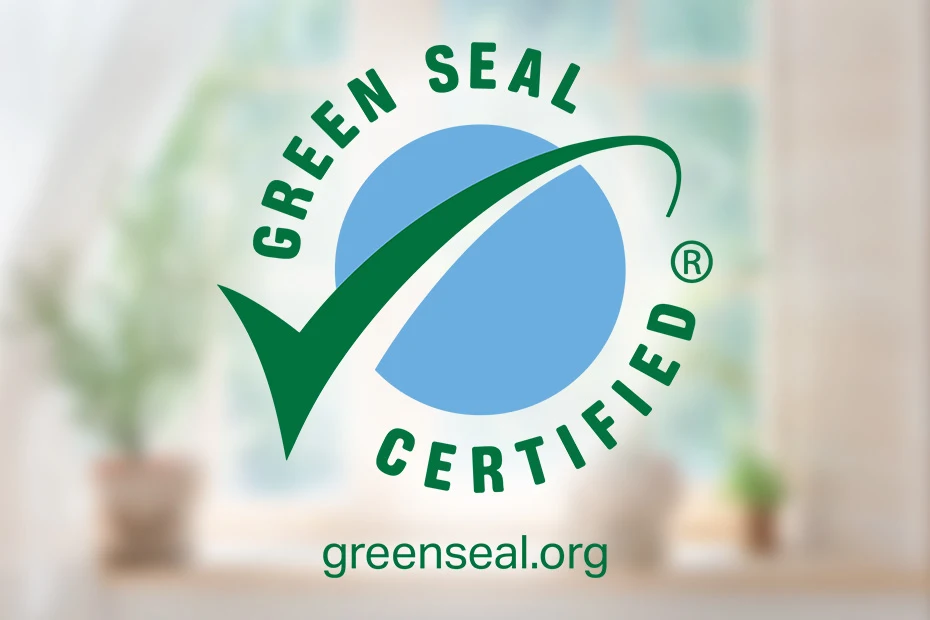

Come combatterlo
Contrastare il greenwashing è essenziale per garantire che i consumatori possano fare scelte informate e che le aziende promuovano pratiche realmente sostenibili. Diverse azioni possono essere intraprese da istituzioni, aziende e consumatori per favorire un mercato più trasparente e responsabile.
Un aspetto cruciale nella lotta al greenwashing è educare i consumatori a riconoscere le pratiche ingannevoli. Molti non sono consapevoli delle differenze tra dichiarazioni ecologiche veritiere e marketing ingannevole. Insegnare loro a comprendere le etichette ecologiche e le affermazioni ambientali è fondamentale. I consumatori devono essere in grado di riconoscere segnali di greenwashing, come l’uso di termini vaghi e non verificabili, come “eco-friendly” o “naturale”, che spesso non sono supportati da prove. Le istituzioni e le ONG possono svolgere un ruolo chiave in questo processo, offrendo risorse accessibili per spiegare come distinguere i prodotti veramente sostenibili da quelli che sono semplicemente “verdi” nel marketing. Un pubblico più informato è meno vulnerabile alle false promesse e più in grado di prendere decisioni consapevoli.
Un metodo fondamentale per contrastare il greenwashing è favorire l’adozione di certificazioni ufficiali che garantiscano l’autenticità delle pratiche aziendali. Le certificazioni forniscono una garanzia concreta che le aziende non si limitano a fare dichiarazioni generiche, ma che le loro attività sono in linea con standard ambientali rigorosi. Tra le certificazioni più riconosciute ci sono l’ISO 14001 e il Green Seal, entrambe che stabiliscono criteri chiari per le aziende che vogliono ridurre il loro impatto ambientale. L’ISO 14001 è uno standard internazionale che definisce le linee guida per un sistema di gestione ambientale. Le aziende certificate devono implementare politiche per ridurre il loro impatto ambientale e garantire il rispetto delle normative vigenti. Per ottenere questa certificazione, le imprese devono sottoporsi a un audit indipendente, che verifica la loro conformità agli standard ambientali, assicurando che le loro azioni siano effettivamente concrete e non solo dichiarative. Il Green Seal, d’altra parte, si concentra sulla certificazione di prodotti specifici come detergenti e materiali da costruzione, valutando non solo l’impatto ambientale diretto, ma anche la responsabilità sociale delle aziende. Questa certificazione aiuta a garantire che un prodotto non solo rispetti gli standard ambientali, ma contribuisca attivamente alla sostenibilità. Entrambe le certificazioni sono fondamentali per creare fiducia nei consumatori e contrastare il greenwashing, poiché dimostrano un impegno reale verso la sostenibilità.
Le aziende impegnate nella sostenibilità devono adottare una strategia di trasparenza, che vada oltre le semplici affermazioni pubblicitarie. Devono rendere accessibili al pubblico i dati relativi alle loro pratiche ecologiche, come le emissioni di CO2, l’utilizzo delle risorse naturali e la gestione dei rifiuti. La pubblicazione di report di sostenibilità dettagliati consente ai consumatori di confrontare le performance ambientali delle aziende e di fare scelte informate. Le pratiche di trasparenza includono anche la disponibilità a fornire informazioni su come vengono gestiti i fornitori e la supply chain, assicurandosi che anche i partner siano in linea con gli stessi valori ecologici. Così facendo, le aziende non solo dimostrano il loro impegno, ma possono evitare le accuse di greenwashing, che spesso nascono dalla mancanza di prove concrete a supporto delle dichiarazioni.
Il greenwashing può essere contrastato efficacemente tramite una legislazione che obblighi le aziende a fare affermazioni veritiere e a fornire evidenze concrete riguardo alle loro pratiche ambientali. Le autorità pubbliche devono introdurre regolamenti severi che puniscano le aziende che non rispettano gli standard ecologici e che usano affermazioni ingannevoli. La legislazione deve non solo incentivare l’adozione di pratiche ecologiche, ma anche fornire strumenti per verificare la veridicità delle dichiarazioni fatte dalle aziende. Inoltre, le autorità dovrebbero monitorare attivamente il mercato e intervenire in caso di false dichiarazioni, sia da parte di grandi aziende che di piccole realtà. Una maggiore regolamentazione e sanzioni per chi fa greenwashing contribuiranno a disincentivare queste pratiche e a proteggere i consumatori.
Affinché le aziende possano evitare il greenwashing, è essenziale che adottino una vera e propria cultura aziendale orientata alla sostenibilità. Ciò significa integrare la sostenibilità in ogni fase del processo produttivo e nelle politiche aziendali, dalla scelta dei materiali alle strategie di riduzione dei consumi energetici. Le aziende devono investire in ricerca e sviluppo per ridurre l’impatto ambientale dei loro prodotti, promuovendo un cambiamento che sia percepibile e che vada oltre la pubblicità. In questo contesto, è importante che le aziende collaborino con altre realtà del settore per condividere best practice, risorse e soluzioni innovative. Le aziende che veramente perseguono obiettivi di sostenibilità devono essere in grado di dimostrarlo con azioni concrete, non solo con parole o strategie di marketing.
Le organizzazioni non governative, i gruppi di attivisti e le associazioni di consumatori sono in prima linea nel monitorare le pratiche aziendali e sensibilizzare l’opinione pubblica sul greenwashing. Questi gruppi possono lanciare campagne per educare i consumatori sui rischi del greenwashing, denunciando pubblicamente le aziende che non rispettano gli standard ambientali. Le campagne di sensibilizzazione sono uno strumento potente per incoraggiare le aziende a essere più trasparenti e per promuovere comportamenti responsabili tra i consumatori. Inoltre, queste organizzazioni possono agire come interlocutori tra i consumatori e le aziende, sollecitando cambiamenti significativi.
Le tecnologie moderne, come le piattaforme basate su blockchain, sono strumenti potenti per combattere il greenwashing. Queste tecnologie possono tracciare la provenienza dei materiali, le fasi della produzione e la gestione delle risorse, consentendo una maggiore trasparenza nelle pratiche aziendali. L’uso di app e altre soluzioni digitali può inoltre permettere ai consumatori di verificare in tempo reale l’affermazione di sostenibilità di un prodotto o di un’azienda. Strumenti tecnologici avanzati possono ridurre la possibilità che le aziende facciano dichiarazioni false o fuorvianti e dare ai consumatori un potere maggiore nel prendere decisioni consapevoli.
